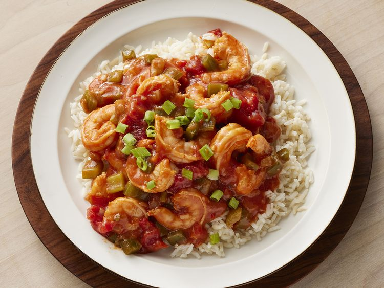

Louisiana Shrimp Creole

Overview
In this delicious shrimp Creole recipe, tomatoes and shrimp are cooked up with garlic and onions. This Gulf Coast tradition will have you dreaming of the bayou. This recipe can either be a main dish or a side dish. You can adjust the heat by adding more hot sauce. Serve over rice.
This top-rated shrimp Creole recipe is packed with bold Louisiana flavor.
Ingredients
- 1 pound large shrimp, peeled and deveined
- 1 large onion, diced
- 2 stalks celery, diced
- 1 green bell pepper, diced
- 3 cloves garlic, minced
- 1 can (14.5 oz) crushed tomatoes
- 2 tablespoons tomato paste
- 1 teaspoon dried thyme
- 1 teaspoon dried oregano
- 1/2 teaspoon cayenne pepper (optional)
- Salt and black pepper to taste
Steps
Heat a large pot over medium heat.
Add the onion, celery, and bell pepper. Cook until softened.
Add the garlic and cook for 1 minute.
Stir in the crushed tomatoes, tomato paste, thyme, oregano, and cayenne pepper (if using).
Bring to a boil, then reduce heat and simmer for 20 minutes.
Add the shrimp and cook until they turn pink and are cooked through.
Serve over hot cooked rice.
Home